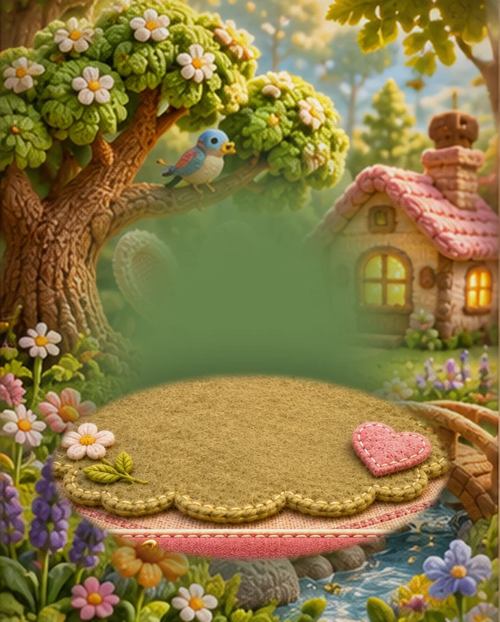

Как хорошо, что ты заглянул! ♡
Твой первый житель · Кролик
Коснись кролика — он отзовётся. А без тебя жизнь на полянке не останавливается.
📖Дневник полянки
У кролика сегодня спокойное утро.
Небольшие события и реакции — первый тест будущего живого мира.Впереди — новые истории
🌼ЦветокКролик сможет его понюхать
🌳ДеревоПод ним можно будет отдыхать
🏠ДомикВечером в нём загорится свет
Это будущие проекты, пока без функции вязания и размещения.